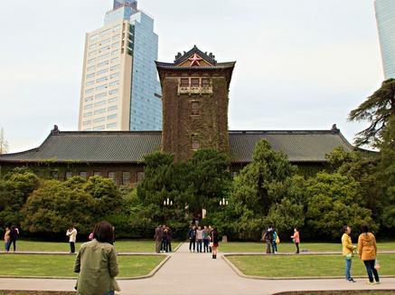

san gong

青城山下
初级前端工程师
25岁之前，我不知道什么叫前端？26岁之前，我以为前端就是切页面的！现在，我知道，其实前端也可以是一种品位，一种眼界，一种生活格调！
我没有华丽的履历，没有牛逼的足迹，只知道，有时候你不努力一下，你都不知道什么叫绝望。
每一次写demo都带着兴奋和激情，每一次写完demo，却常常会陷入bug缠绕的苦恼和疲惫中，但更多的时候，十分享受那种完美解决一切，完成目标带来的激动和喜悦之情。


一个人如果没有计划，早上起不来，晚上睡不着，出去玩不开心，工作时无法聚精会神，而有了计划和目标，人，就像一只青蛙，开始向着王子蜕变，虽然本质还是一只青蛙，但好歹思想已经不在停留在青蛙的世界里！
制定计划不难，执行计划并完成才是这个世界上最难的事情，好在，计划看起来还算合理，难度也不算太高，年终完成的可能性还是有的。现在先记着，就等着岁终，再来看看到底完成了多少？是一项、二项、三项，还是……
总体来说：切页面，写js效果，基本的能力和经验足够；干大项目写组件参与模块化开发，将性能优化进行到底，在资历和经验上尚有大的不足；vue、angular的框架，以及node.js有待进一步深入学习，手机端、微信开发更是缺乏实战。
如果您觉得我还行，给我一个试用期；
如果您觉得我符合贵公司的任职最低要求，请毫不犹豫的带走我；
邮箱：qingchengshanxia@foxmail.com
（相识是一种缘分，也许一处就是下半辈子！）